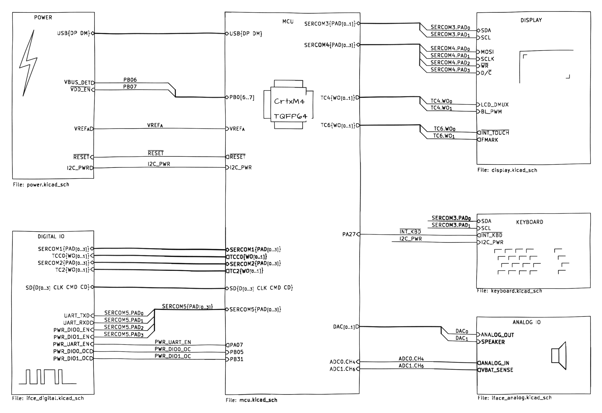
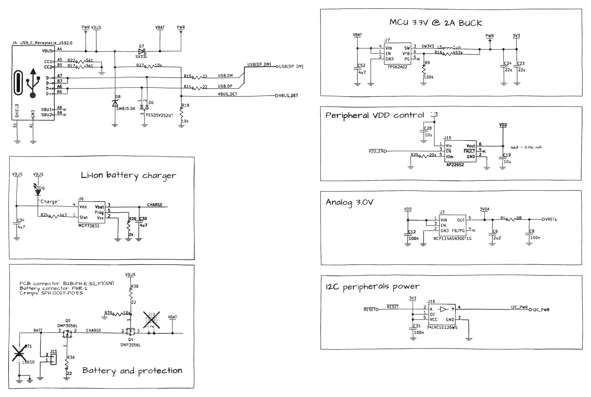
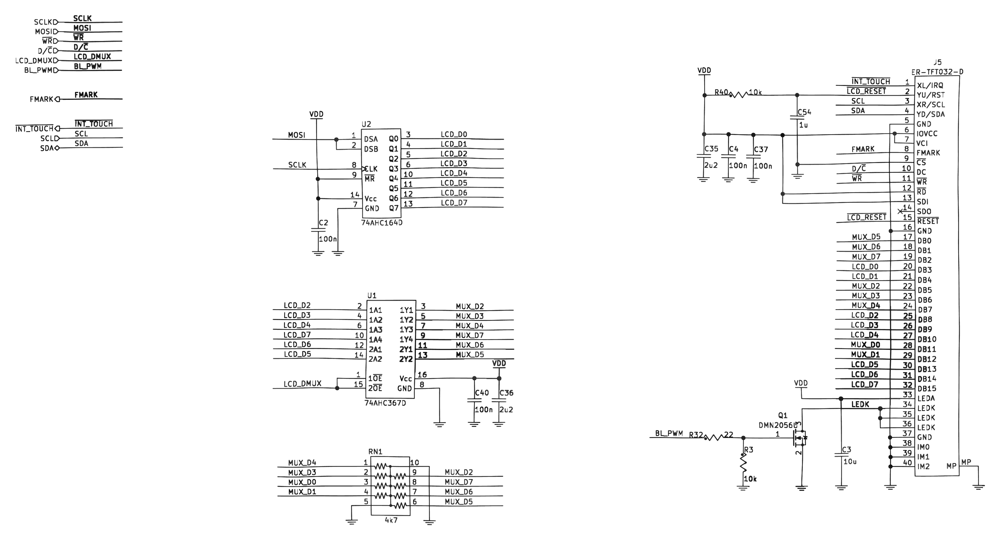
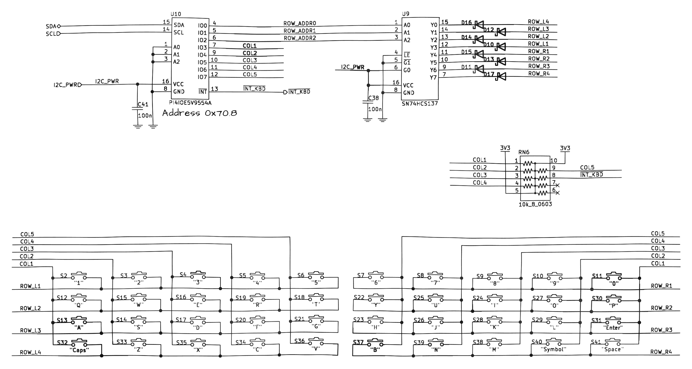
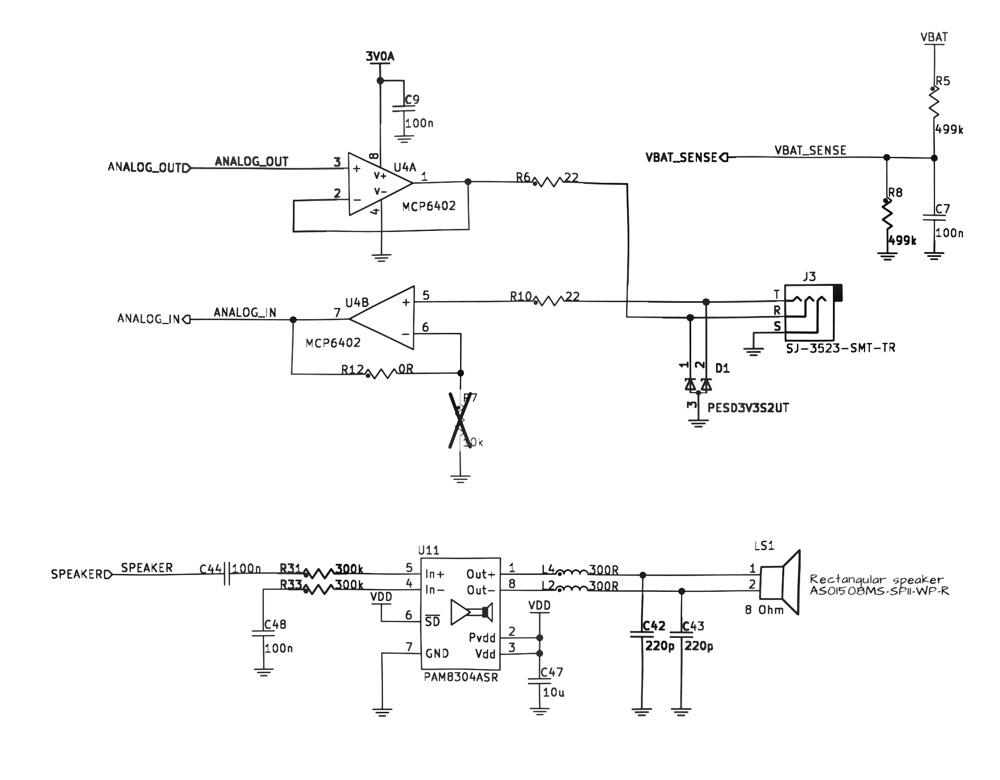
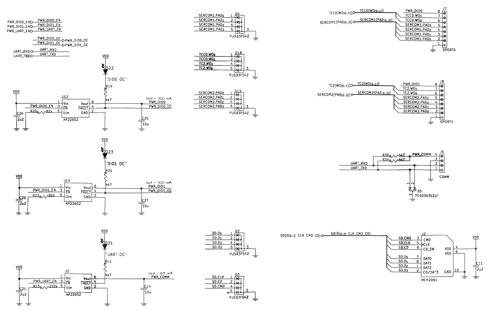
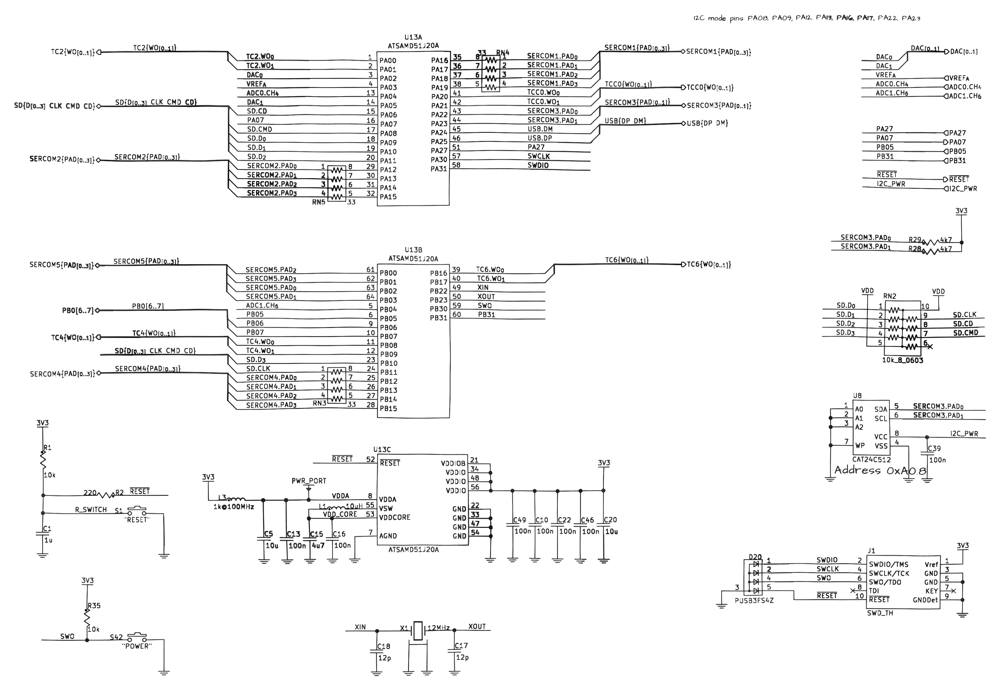

Rimer SBC
How the board works, block by block, and why it is built the way it is.
Overview
Rimer is a one-chip computer. There is no FPGA, no graphics controller, no USB bridge and no keyboard controller. The ATSAMD51 does all of it, and the rest of the board is there to feed it power, protect its pins and translate its signals for the outside world.


One chip does it all
The SAMD51 has six SERCOMs, eight timers, two 12-bit ADCs, a two-channel DAC, an SD host controller, USB and a DMA controller with 32 channels. That is enough to give every function on the board its own peripheral, so nothing has to be shared or bit-banged:
| Function | Peripheral |
|---|---|
| Display | SERCOM4 (SPI) + DMA, TC4 for the bus mux and the backlight, TC6 for touch and tearing |
| Keyboard, EEPROM, touch | SERCOM3 (I2C) |
| SPORT0 | SERCOM1 + TCC0 |
| SPORT1 | SERCOM2 + TC2 |
| COMM | SERCOM5 |
| SD card | SDHC0, 4-bit |
| Analog jack, speaker | DAC0, DAC1, ADC0 |
| Battery | ADC1 |
| PC | USB full speed |
The sheets
The schematic is split into six sheets under the top sheet. The rest of this manual follows them in this order: power, display, keyboard, analog IO, digital IO, and the MCU last, because everything else connects to it and the pin map makes more sense once you have seen what is on the other end.
Three supply names appear everywhere:
| Rail | What it is |
|---|---|
3V3 | always on while there is any power - the MCU, the I2C pull-ups |
VDD | switched 3.3 V for everything the MCU can turn off: display, keyboard, SD card, audio, IO ports |
3V0A | quiet 3.0 V, the reference for the ADC and DAC |
Power
The power sheet has one job: run the board from USB or a single Li-Ion cell, charge the cell when USB is there, and switch between the two without a glitch. Everything else on the sheet is protection or a rail derived from that.


USB-C entry
J4 is a USB 2.0 type-C receptacle. Rimer is a device, so the two CC pins get the 5k1 pull-downs (R17, R22) that tell any charger or PC "I am a sink, give me 5 V". Nothing more is negotiated - 5 V at up to 500 mA from a PC port or more from a charger is plenty.
- D8 (SMBJ5.0A) clamps surges on VBUS. Hot-plugging cables produces spikes well above 5 V.
- D6 (PESD5V2S2UT) protects D+ and D-.
- R14, R15 (22 Ω) are the series resistors the SAMD51 USB needs on D+ and D-.
- R27/R18 divide VBUS by two into
VBUS_DET(PB06), so the firmware knows when a cable is plugged in without exposing the pin to 5 V.
Power path
The board must run from USB while the battery charges, and from the battery when the cable goes. The simplest way that works is a diode and a P-MOSFET:
- D7 (SX33L Schottky) feeds VBUS into the main rail
PWR/VBAT. With USB connected the rail sits at about 4.7 V, above any battery voltage. - Q4 (DMP3056L) connects the battery to the same rail. Its gate is pulled up to VBUS through R38 and down to ground through R39. With USB present the gate is high and Q4 is off: the load runs from USB and the charger alone looks after the cell. Without USB R39 pulls the gate low, Q4 turns on and the battery takes over.
- Q5 (DMP3056L) sits in the battery lead with its gate tied to ground through R36. It is the reverse polarity protection: with the cell the right way round Q5 is fully on and drops almost nothing; with the cell reversed its body diode blocks and the board sees nothing.
Separating the load from the cell while charging matters: the MCP73832 measures the charge current to decide when the cell is full. If the board's own current flowed through the charger too, it would never see the current drop and never stop charging.
The cell goes on J11, a 2-pin JST PH (B2B-PH-K-S). BT1, the 18650 holder, is in the drawing but not fitted on Rev A boards. J10, also not fitted, is a jumper position on the battery line.
Charger
U6 is an MCP73832, a single-cell linear charger. It does constant current, constant voltage and termination by itself; the MCU never has to touch it.
- R26 = 2 kΩ on PROG sets the charge current: I = 1000 V / 2 kΩ = 500 mA. That is safe for the small LiPo cells and still within what a USB 2.0 port gives.
- D9, the Charge LED, hangs on the STAT output through R24. It is lit while charging and goes off when the cell is full.
The rails
3.3 V buck
U7 is a TPS62A02, a 2 A synchronous buck converter running from the main rail. A buck instead of an LDO, because the input is anywhere between 3.0 V (empty cell) and 4.7 V (USB); an LDO would turn most of that difference into heat and halve the battery life. The feedback divider R16/R9 (453k/100k) sets the output to 0.6 V × (1 + 453/100) = 3.32 V. When the cell is nearly empty the converter goes into 100 % duty cycle and the rail simply follows the battery down.
VDD switch
U15 (AP22652) switches 3V3 to VDD under control of VDD_EN (PB07, active low). R25 = 20k sets its current limit to about 1.3 A. Everything that is not needed to keep the MCU alive is on VDD, so sys:off can cut the display, keyboard, SD card and audio in one go and leave only the MCU in its lowest power mode.
Analog 3.0 V
U3 (NCP114, 3.0 V) is an LDO that makes 3V0A from VDD. It feeds the ADC and DAC reference (VREFA, through R4) and the analog op-amps. 3.0 V and not 3.3 V on purpose: an LDO needs headroom, and a reference that sits below the supply stays clean when the digital rail has ripple.
At the very end of the battery the buck runs at 100 % duty, 3V3 follows the cell down, and below a cell voltage of about 3.2 V the LDO has no headroom left - 3V0A drops with it. In practice this is the point where a Li-Ion cell falls off sharply anyway. Anything that has to measure reliably at that point, such as the battery voltage, can switch the ADC to the SAMD51's internal reference instead of VREFA.
I2C peripherals power
U16 is a 74LVC1G126 buffer with its input on the RESET line. Its output, I2C_PWR, powers the keyboard expander, the decoder and the EEPROM. While the MCU is held in reset those parts lose their supply; when reset is released they power up again.
The reason is recovery. An I2C slave can hang in the middle of a transfer - holding SDA low after a glitch, for example - and then no amount of clocking from the master gets it out. Cutting its supply does. With the supply tied to RESET, a reset of the board is always a full restart of the I2C bus as well, without any recovery code in the firmware. It has never happened in practice, but it costs one small gate. A single gate also has plenty of drive for the few hundred microamps these chips take.
Display
The fastest way to fill a 320 x 240 screen is a parallel bus, but a parallel bus costs eighteen pins. The display sheet gets parallel-bus speed out of one SPI port and two logic chips.


Serial in, parallel out
The LCD (ER-TFT032IPS-3.2 with an ST7789V2 controller, or an ILI9341 module) is set to its 16-bit 8080 parallel mode by the IM pins. The MCU drives it from SERCOM4 in SPI mode at 60 MHz:
- U2, a 74AHC164 shift register, takes MOSI and SCLK and turns every 8 bits into a byte on
LCD_D0..D7. - The SPI hardware chip select, which the SERCOM pulses once per byte, is wired to the LCD's WR strobe. When the byte is complete in U2, WR latches it into the LCD. No CPU work, no extra pin.
- D/C is a normal GPIO; CS is tied low and RD high, because Rimer only ever writes to the display.
The frame buffer is in RAM and a DMA channel streams it into the SPI port, so a full frame costs the CPU nothing. The SERCOM's inter-character space is used to set the frame rate - 50 to 66 Hz depending on the setting.
8 bits become 16
One byte per pixel keeps the frame buffer at 75 KB, which fits next to everything else in 256 KB of RAM. The LCD wants 16-bit RGB565, though. The conversion is done in wiring:
- The byte is RGB 3-3-2. Its three red bits go to the top of the LCD's red field, its three green bits to the top of the green field, its two blue bits to the top of the blue field.
- The remaining low bits of each field come from
MUX_D0..D7. During pixel data the buffer U1 (74AHC367) is disabled and RN1 (4k7) pulls those lines low, so each colour is simply padded with zeros. - Commands are different: the controller expects them on DB0-DB7, and those lines are a mix of direct and MUX lines. For commands
LCD_DMUXenables U1, which copies the byte onto the MUX lines. Because of the wiring the byte arrives rotated by three bits, so the firmware rotates it the other way first (_mux()inlcd.c).
The result: 256 colours on screen at a full 16-bit bus speed, from 8 bits of memory per pixel.
Backlight, reset, touch
- Backlight - the LED cathodes (LEDK) go to ground through Q1 (DMN2056U), driven by
BL_PWMfrom TC4 through R32. R3 keeps the backlight off while the MCU starts.set:brightchanges the PWM duty. There is no series resistor on purpose: the panel's backlight is rated for 3.3 V and has its own current-limiting resistor, so LEDA goes straight to VDD. - Reset - R40/C54 hold the LCD in reset for about 10 ms after power-up, then release it. One less GPIO.
- Tearing - the controller's frame mark output
FMARKgoes to TC6, so drawing can be synchronised to the panel refresh. - Touch - the optional capacitive touch panel sits on the system I2C bus, with its interrupt
INT_TOUCHon TC6 as well.
Keyboard
The keyboard is the ZX Spectrum matrix: 8 rows of 5 keys. Scanning it directly would take 13 GPIOs. On Rimer it takes none - it hangs on the I2C bus that is already there for the EEPROM.


- U10, a PI4IOE5V9554A I2C expander (address 0x70), has 8 IO lines. Three of them (
ROW_ADDR0..2) select a row, five (COL1..5) read the columns. - U9, an SN74HCS137 3-to-8 decoder, turns the 3-bit row address into one of eight row lines, pulled low. The row lines follow the Spectrum's half-rows: left half
ROW_L1..L4, right halfROW_R1..R4. - RN6 (10k) pulls the columns up. A pressed key in the selected row pulls its column low.
- D10-D17 (RB520S30 Schottky) sit in every row line. The decoder drives the unselected rows high; if two keys in the same column are pressed in different rows, the selected row and an unselected one would be shorted through the column. The diodes make the rows pull-down only, so any combination of keys is safe.
INT_KBDis the expander's change interrupt on PA27.
The Spectrum layout was not just nostalgia: the emulator can read the matrix row by row exactly the way the real Spectrum ROM expects, with no translation table.
U9 and U10 run from I2C_PWR, see I2C peripherals power.
Analog IO
Three small circuits share this sheet. All of them work against the 3.0 V reference, so a reading of 1.500 V on the ADC means 1.500 V on the pin, whatever the battery is doing.


The jack
J3 is a 3.5 mm TRS jack used as an analog port, not as headphones. U4 (MCP6402) is a dual rail-to-rail op-amp powered from 3V0A:
- U4A buffers
ANALOG_OUT(DAC0). The DAC itself can't drive a cable; the follower can, and R6 (22 Ω) keeps it stable with a capacitive load. - U4B buffers the input into
ANALOG_IN(ADC0 channel 4). The SAMD51's ADC samples a capacitor and needs a low source impedance; whatever is on the jack gets a high-impedance load instead. R12 (0 Ω) and R7 (not fitted) are a gain option: fit R7 and replace R12 to make U4B a non-inverting amplifier for small signals. - R10 (22 Ω) and D1 (PESD3V3S2UT) protect the op-amp pins against ESD from the plug. The input is meant for 0 to 3.0 V. If you expect signals outside that range - a 3.3 V logic level, for example - replace R10 with 1 kΩ or more: it then limits the current into the op-amp's input clamps, and at these frequencies it costs nothing.
Tip is the input, ring is the output, sleeve is ground.
Speaker amplifier
U11 is a PAM8304, a filterless class-D amplifier, 700 mW into the 8 Ω speaker LS1. Class-D because it runs from the battery and wastes almost nothing.
- The source is DAC1 (
SPEAKER), AC-coupled through C44. - R31/R33 (300k) are the input resistors and set a low gain. A DAC at full swing is a big signal; the gain is kept down so
set:volhas a useful range instead of being loud or off. - "Filterless" still radiates: L2/L4 (300 Ω ferrite beads) and C42/C43 (220 pF) take the switching edges off the speaker wires so they don't end up in the analog input or the display.
- The shutdown pin is tied high: there was no MCU pin left to control it. The amplifier is on whenever VDD is on and off with it; muting is done by keeping DAC1 quiet.
Battery sense
R5/R8 (499k each) halve the battery voltage into VBAT_SENSE (ADC1 channel 6). The resistors are large so the divider draws only about 4 µA from the cell - it is connected all the time, also when the board is off. C7 (100 nF) gives the ADC a low-impedance source to sample from, which the 250 kΩ divider alone couldn't. For readings near the end of the battery, use the internal reference - see Analog 3.0 V.
Digital IO
The ports are meant for experiments, which means they will see shorts, wrong cables and static. Every pin that leaves the board is protected, and every port has its own power switch that the MCU controls and that switches itself off on overload.


Port power switches
U12, U14 and U5 are AP22652 current-limited load switches, one per port. Each is enabled by the MCU (PWR_DIO0_EN, PWR_DIO1_EN, PWR_UART_EN) and has its limit set by one resistor:
| Port | Switch | RLIM | Limit | Fault LED |
|---|---|---|---|---|
| SPORT0 | U12 | R20, 82k | 300 mA | D22 "DIO0 OC" |
| SPORT1 | U14 | R23, 82k | 300 mA | D23 "DIO1 OC" |
| COMM | U5 | R13, 210k | 125 mA | D21 "UART OC" |
On overload the switch limits the current, and its FAULT output lights the LED and tells the MCU (PWR_DIO0_OC on PB05, PWR_DIO1_OC on PB31). A short on a port never pulls down the board's own 3.3 V.
SPORT and COMM
SPORT0 (J7) and SPORT1 (J8) carry a full SERCOM - four pads - plus two timer outputs each. Any SERCOM mode works on them: SPI, UART, I2C, or plain GPIO, and the timer pins give PWM or capture. They are right-angle 8-pin headers, so small plug-in cards can sit on the board edge.
Every signal goes through a PUSB3FS4Z ESD array (D4, D18, D19). The MCU side also has 33 Ω series resistors (on the MCU sheet), which limit the current into a pin that is driven against an external source.
COMM (J6) is the 4-pin serial port on SERCOM5. Its two lines have 4k7 pull-ups to the port's own switched supply PWR_COMM, so the port works as I2C without external resistors, and with the port off nothing is pulled up - the board can't back-power a device that is switched off. D5 (PESD3V3S2UT) protects the two lines.
SD card
J2 is a microSD socket on the SAMD51's SD host controller in 4-bit mode - many times faster than SPI mode, which matters for loading games and for USB mass storage. The data and command lines go through PUSB3FS4Z arrays (D2, D3); their pull-ups (RN2, 10k) are on the MCU sheet. The socket's card-detect switch goes to SD.CD.
MCU
Everything the other sheets bring in ends here. The MCU sheet itself is mostly the chip's housekeeping: supply, clock, reset, the debug port, the system I2C bus and the EEPROM.


The ATSAMD51J20A: Cortex-M4F at 120 MHz, 1 MB Flash, 256 KB RAM, 64 pins. The J20 is the largest memory in this package, and 256 KB RAM is what makes a full-screen frame buffer, the Spectrum's 48 KB and BASIC programs possible at the same time.
Supply and core regulator
- All VDDIO pins have their own 100 nF (C49, C10, C22, C46) plus C20 (10 µF) for the group.
- VDDA is fed through L3, a ferrite bead (1 kΩ at 100 MHz), with C5/C13 behind it. The ADC and DAC see the 3.3 V rail without the digital noise.
- L1 (10 µH) on VSW: the SAMD51 has a built-in buck converter for its 1.2 V core. Using it instead of the internal LDO cuts the core's current draw noticeably - worth one inductor on a battery-powered board. C15 (4u7) and C16 smooth VDDCORE.
Clock
X1 is a 12 MHz crystal with C17/C18 (12 pF). The DPLL multiplies it to 120 MHz for the CPU. A crystal and not the internal oscillator, for two reasons: USB needs an accurate clock, and the 12 MHz divides evenly into every clock the board uses - 60 MHz for the LCD SPI, 12 MHz for the slow SERCOMs and the ADC.
Reset, POWER and SWD
- Reset - R1 (10k) and C1 (1 µF) make a power-on reset delay. S1, the RESET button, discharges C1; R2 (220 Ω) between the capacitor and the RESET pin limits the current when the debugger or the button pulls reset low.
- POWER - S42 pulls PB30 low, with R35 (10k) as the pull-up. The button is new in V1.0 and reserved for a power on/off function that the firmware doesn't implement yet. PB30 is also SWO, the debug trace output; the two don't get in each other's way, because SWO is only used while debugging and the pull-up keeps the line idle high.
- SWD - J1 is the standard 10-pin 1.27 mm Cortex debug connector: SWDIO, SWCLK, SWO and RESET. D20 (PUSB3FS4Z) protects the lines; a debug cable is exactly the kind of thing that gets plugged in with static on it.
System I2C and EEPROM
SERCOM3 (PA22, PA23) is the board's internal I2C bus: keyboard expander, EEPROM and touch panel. R28/R29 (4k7) pull it up to 3V3, which is right for 400 kHz with this short bus.
U8 is a CAT24C512, 64 KB of I2C EEPROM at address 0xA0. It holds the LLFS file system with the settings. Write protect is tied low: the firmware decides what is written. EEPROM and not Flash, because settings change often and a byte-writable EEPROM survives a million writes without wear levelling.
Series resistors
RN3, RN4 and RN5 put 33 Ω in series with SERCOM1, SERCOM2 and SERCOM4 - both SPORTs and the LCD bus. On the LCD lines they damp the ringing of 60 MHz edges on a long trace; on the ports they limit the current if an external device drives a pin that the MCU is also driving.
MCU pin map
| Pin | Signal | Use |
|---|---|---|
| PA00, PA01 | TC2 WO0, WO1 | SPORT1 timer pins |
| PA02 | DAC0 | analog output (jack) |
| PA03 | VREFA | 3.0 V reference input |
| PA04 | ADC0 ch4 | analog input (jack) |
| PA05 | DAC1 | speaker |
| PA06 | SD.CD | SD card detect |
| PA07 | PWR_UART_EN | COMM power enable |
| PA08-PA11 | SD.CMD, SD.D0-D2 | SD card |
| PA12-PA15 | SERCOM2 PAD0-3 | SPORT1 |
| PA16-PA19 | SERCOM1 PAD0-3 | SPORT0 |
| PA20, PA21 | TCC0 WO0, WO1 | SPORT0 timer pins |
| PA22, PA23 | SERCOM3 PAD0, PAD1 | system I2C SDA, SCL |
| PA24, PA25 | USB DM, DP | USB |
| PA27 | INT_KBD | keyboard interrupt |
| PA30, PA31 | SWCLK, SWDIO | debug |
| PB00, PB01 | PWR_DIO0_EN, PWR_DIO1_EN | SPORT power enables |
| PB02, PB03 | SERCOM5 PAD0, PAD1 | COMM TXD/SDA, RXD/SCL |
| PB04 | ADC1 ch6 | battery sense |
| PB05 | PWR_DIO0_OC | SPORT0 overload flag |
| PB06 | VBUS_DET | USB present |
| PB07 | VDD_EN | VDD switch, active low |
| PB08, PB09 | TC4 WO0, WO1 | LCD_DMUX, BL_PWM |
| PB10, PB11 | SD.D3, SD.CLK | SD card |
| PB12-PB15 | SERCOM4 PAD0-3 | LCD MOSI, SCLK, WR, D/C |
| PB16, PB17 | TC6 WO0, WO1 | INT_TOUCH, FMARK |
| PB22, PB23 | XIN, XOUT | 12 MHz crystal |
| PB30 | SWO | trace output, POWER button |
| PB31 | PWR_DIO1_OC | SPORT1 overload flag |